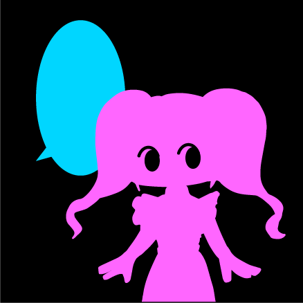
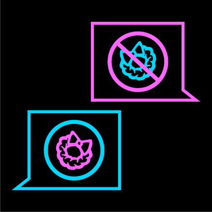
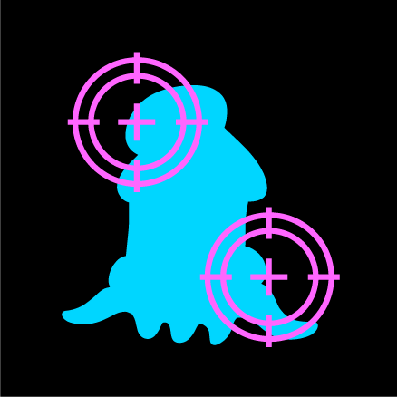
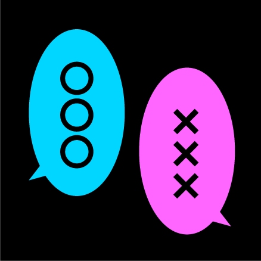

元々このアニメはASDの子ってどんな感じ？を掴んでもらうために実体験を元に作りました。
この女の子は知り合いのASDの子が元です。
『ASDについて詳しく知らない人』を『人間について詳しく知らない異星人』に例えてイカ星人として出しています。
イカ星人が何も知らずに振り回されるという意味を込めてBUNBUNというタイトルになっています。
ASDとは脳の発達機能に偏りがある発達障害の一種です。心の問題ではないので完全に治ることはありません。
思ったことをそのまま口にしてしまったり、強いこだわりがあったり、特徴は人によって様々です。
BUNBUNのロゴはアニメーション内でASDの特徴が出た時に出ています。
勾玉のような形の青とピンクの線はイカの脚と女の子の髪を模していて、
それを対極に配置して振り回されている効果線のようにしました
以下はアニメーション内で出した特徴です。これが全てではありません、特徴は人によって様々です。
特徴で生活に支障が出ている場合、医師と相談し、ヘルプマークを入手する事ができます。
▲聴覚などが敏感
▲曖昧な表現が苦手
 ▲話を聞く態度をとる
事が苦手
▲こだわりが強い
 ▲外見に関する事を
突然言う
▲テーマと関係ない
話をする
▲相手の心情を
ニュアンスから
察する事が苦手
▲雰囲気を読む事が苦手